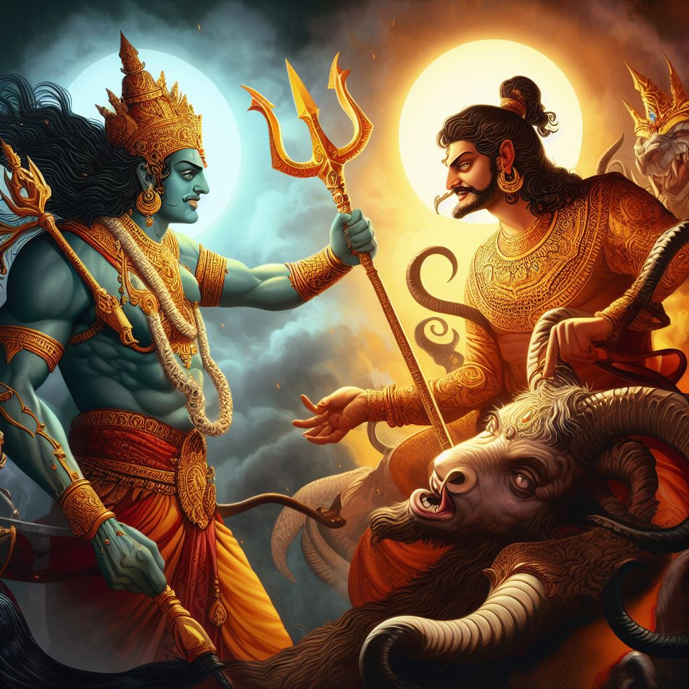
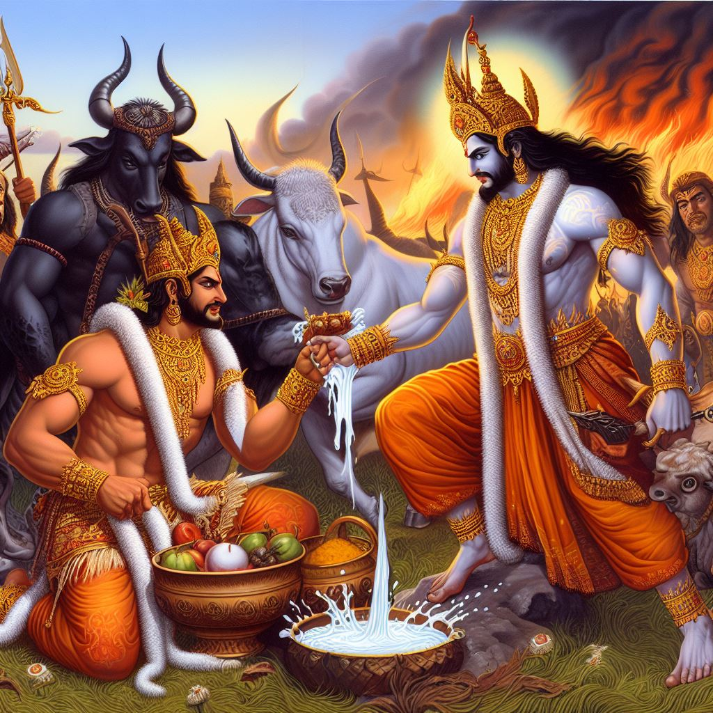

|
Vikram catches Betal again and takes him away. Betal again gives him a
Hear the story that Princess Chandraprabha of Kusumavati Nagar got
married to a young man. Fall in love whose name was Manu Kumar. marry
each other Wanted but it was not possible because Manukumar was from
some state. He was not a prince but an ordinary man. Chandraprabha
tells Manu that she Give up the idea of marrying. Because my father
you will die for this You can also give punishment which she will not
be able to bear, so she should go away from here. Needed Manu Kumar
obeys the princess and comes away. a magician in his Manu was coming
to Kusumavati Nagar with his son when they were attacked by bandits.
Kumar saves both of them from the bandits. Manu on magician saving his
life Asks Kumar to ask for anything of his wish. From Manu Kumar
Magician Says that he loves Princess Chandraprabha and he will always
be with her. He wants to live but no one can recognize him, please do
some miracle. The magician gives him a ring which Manu puts on the
finger of his right hand. becomes a girl and by putting the same ring
on the finger of the left hand Manu becomes Kumar again, Manu becomes
happy. the magician, his boy And Manu goes to the king in the form of
a girl. The magician disguises himself as a Brahmin and tells the king that his name is Muldev and names his son Shashi and tells the king to name Manu as his son. Tells the arm to be of. When the king asks them the reason for their coming The magician tells them that the magician and his son are going on a pilgrimage. Till then, keep Manu Kumari in your palace. Raja Manu Kumari He makes princess Chandraprabha a friend and keeps her in the palace. Manu As soon as he gets a chance, he tells the whole story to the princess. many days passed like this Both of them go and start spending time with each other. one day minister The son proposes marriage to Manu Kumari because he is not ready for her arrival. Started loving her from that day. When Manu refuses him, he is stubborn. He comes in and gives up his food. Minister about his son's stubbornness Raj comes and tells Ankit that he wants to marry Manu or her marriage. If that doesn't work, he will sacrifice his life. after listening to the king's minister Comes to Manu to fulfill his wish. Manu's left hand He gets an injury to his finger due to which he cannot become a boy again. Was. The king comes to her and tells her that she will marry the minister's son. Hearing that she will be with him, Manu forbids them from doing so but the king allows him to rule. After taking permission, he marries her with the minister's son. |
 |
| As soon as they learn of the marriage, the magician and his son return and tell the king about Manu's marriage. He starts punishing her for marrying the minister's son with his magic. With his power he levitates the throne along with it into the air. The king tells the magician that He will marry their daughter to his own daughter. to the magician king's words He agrees and throws the king down. Minister's son Manu got this When he comes to tell Manu, he gets angry. manu kumar his ring Manu comes out and forcefully puts it on the finger of his left hand. The minister's son is surprised to see what the boy has become. Manu Mantri He reaches the wedding hall with the sword of his son and says Chandraprabha is my wife. After hearing this story, Betal asked King Vikram Now tell whose wife Chandraprabha is. The king says that the moon Prabha is Shashi's wife because she is legally married to Shashi. It is happening but nothing like this had happened to Manu Kumar. Therefore Shashi and Chandraprabha will get married. As soon as he heard the answer of Betal Raja, he returned to his tree. But he goes and hangs himself. |  |